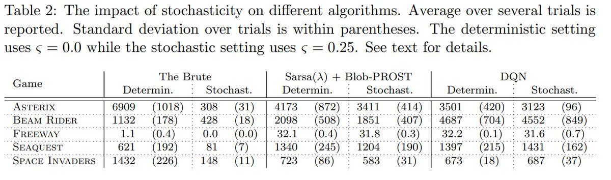
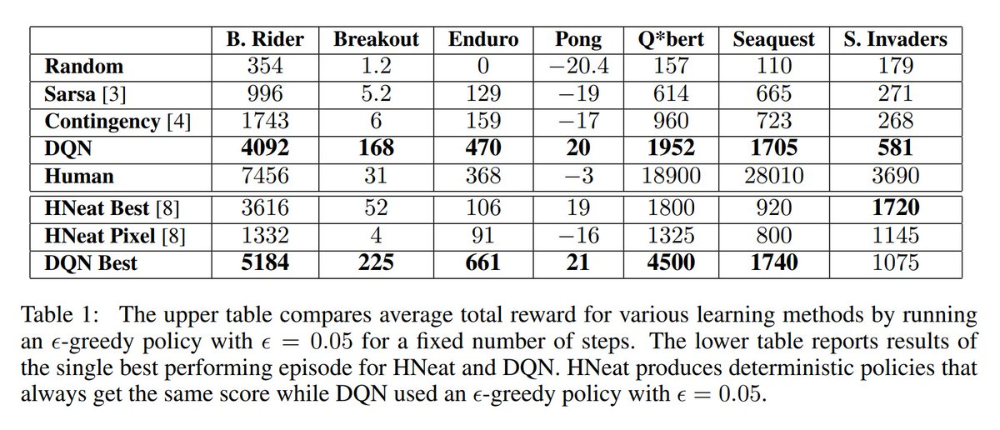
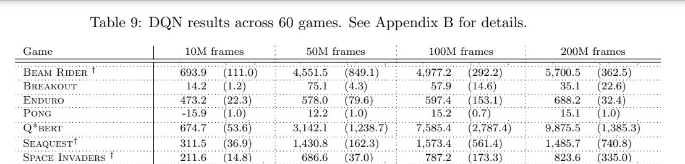
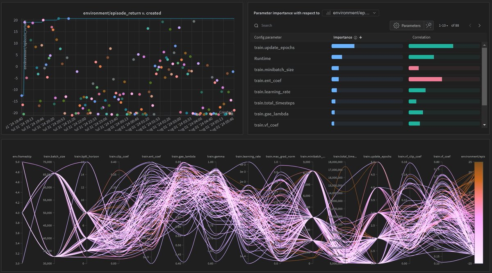
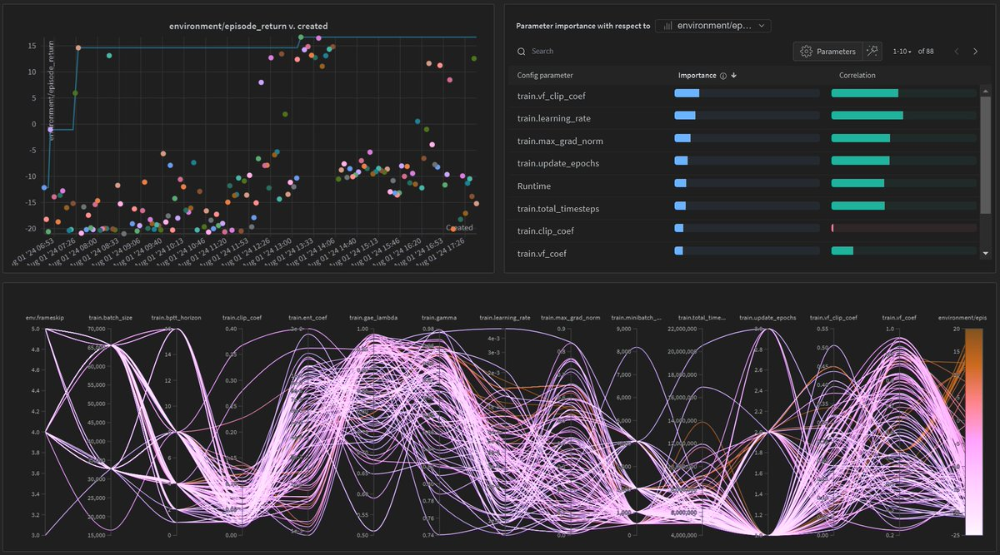
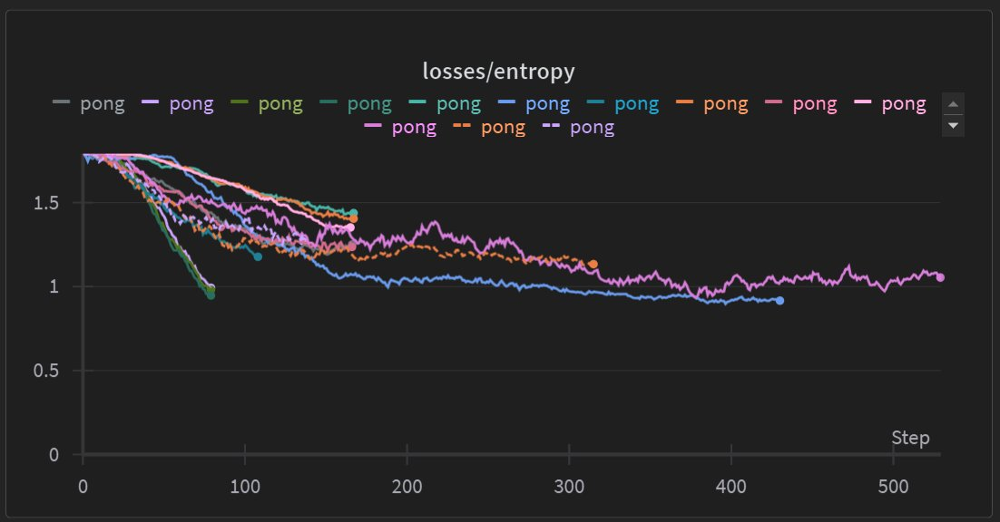
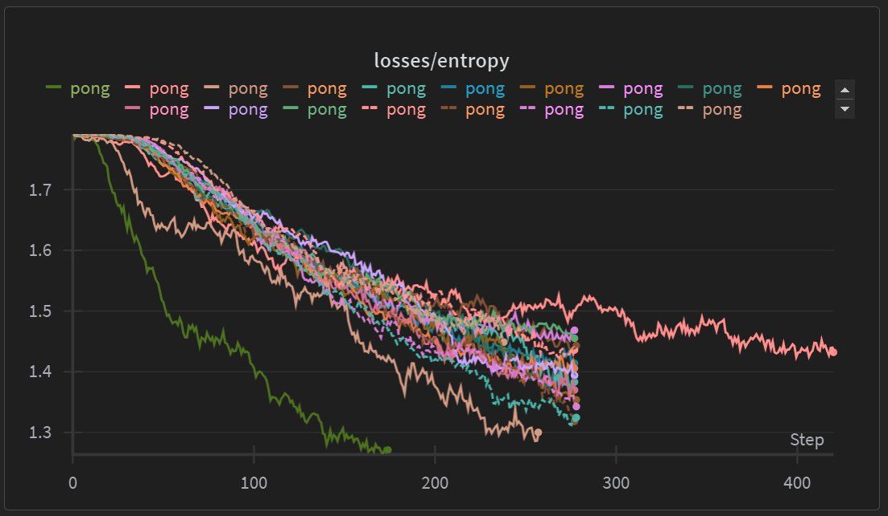
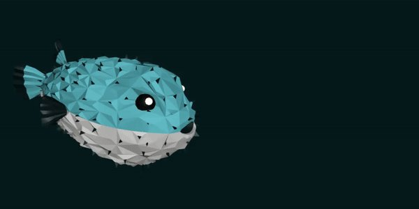

Sticky Actions Considered Harmful
Atari is the most widely used benchmark in RL. It is standard practice to randomly repeat agent key presses, making actions "sticky." This technique was introduced by a landmark paper in 2017 with 600+ citations and is the default setting in ale-py. The motivation was to prevent algorithms from hypothetically memorizing a fixed set of key presses to win the game, which is possible because Atari is deterministic. Sticky actions were broadly adopted because they cover this edge case and, according to the authors, they do not degrade the performance of DQN. Today, I use data in the original paper to show that this claim is false. I further demonstrate that sticky actions can massively degrade the performance of PPO, which is not learning deterministic policies to begin with.
Joseph Suarez is an MIT PhD and full-time RL exorcist. I build simple, ultra-high performance tools for reinforcement learning. It's all open source. You can support my work by following me and starring PufferLib.
Evidence in the original paper
Here is the table ablating stochastic (sticky) vs. deterministic actions:

Here are the original DQN results:

Notice that Machado et al. only ablate three of the original environments. The three overlapping results roughly match: original DQN does a bit better on Seaquest while Machado et al. do a bit better on Beam Rider and Space Invaders. Machado et al. list full Atari results with sticky actions in the Appendix:

Comparing this to the original DQN results, we see that Machado et al. substantially underperform on Pong and Breakout. These are two of the best known and most consistent Atari environments.
Experimental evidence with PPO
I ran a large hyperparameter sweep on Pong using PufferLib's PPO + LSTM implementation with and without sticky actions. The environment is solved almost immediately without sticky actions but only gets a maximum of around 16 score with them, which closely matches Machado et al.'s reported performance.


Evidence from just playing the game
One of the biggest advantages of using games as research environments is that they are easy to interpret. All you have to do is play them. This whole debacle could have been prevented by spending a few minutes trying to play Atari with sticky actions. Try it yourself with the code below -- Pong requires precise control to begin with, is harder with frameskip, and is unplayable with sticky actions. I set the target FPS to be 60 after accounting for frameskip.
# pip install gymnasium[atari] and raylib
import gymnasium as gym
env = gym.make('Pong-v4', render_mode='rgb_array', frameskip=5, repeat_action_probability=0.25)
env.reset()
from raylib import rl, colors
rl.InitWindow(160, 210, "Pong".encode())
rl.SetTargetFPS(12)
import numpy as np
rendered = np.zeros((160, 210, 4), dtype=np.uint8)
import pyray
from cffi import FFI
raylib_image = pyray.Image(FFI().from_buffer(rendered.data),
160, 210, 1, pyray.PIXELFORMAT_UNCOMPRESSED_R8G8B8)
texture = rl.LoadTextureFromImage(raylib_image)
while True:
if rl.IsKeyPressed(rl.KEY_ESCAPE):
break
if rl.IsKeyDown(rl.KEY_LEFT):
env.step(3)
elif rl.IsKeyDown(rl.KEY_RIGHT):
env.step(4)
else:
env.step(0)
frame = env.render()
rl.BeginDrawing()
rl.ClearBackground(colors.BLACK)
rl.UpdateTexture(texture, frame.tobytes())
rl.DrawTextureEx(texture, (0, 0), 0, 1, colors.WHITE)
rl.EndDrawing()But isn't determinism bad?
Maybe, but PPO isn't learning a deterministic policy even without sticky actions. Entropy stays above 0.8 for all runs. Note that the entropy coefficient is included in the hyperparameter sweep, so low entropy zones are explored. The sweep was allowed to set as low as 1e-5, but there were no good runs in this range. All the best runs set entropy above 1e-3.


But won't removing sticky actions make Atari too easy?
Maybe, but this is a dumb source of difficulty. Machado et al. use a frameskip of 5 and a repeat action probability of 25%. That means that the agent submits an action, 5 frames pass, and then control returns to the player. There is a 1/4 chance that their action gets repeated, delaying the return of control for another 5 frames. So: 1/4 for at least a 10 frame delay 1/16 for at least a 15 frame delay 1/64 for at least a 20 frame delay 1/256 for at least a 25 frame delay 1/1024 for at least a 30 frame delay
Accounting for frameskip, you should expect a 30 frame delay every 1024*5=5120 frames... or every 85 seconds, with Atari's 60 fps. So every 85 seconds, if you are playing Pong, your controls freeze up for half a second and the paddle keeps sliding. Not exactly the best source of difficulty.
I noticed Machado et al. do better on some environments
Not all games will be lost in the span of half a second. In these cases, it is possible that sticky actions act as a regularizer. There are probably better ways to achieve the same result, but if you really want to use sticky actions, treat it as a hyperparameter. Sweeps can then automatically discover the best value based on the environment. But definitely don't set it to 0.25 for all environments. In an earlier sweep, I didn't find a good setting for pong above 0.13.
What's next?
I will be removing this setting from the PufferLib defaults and rerunning hyperparameter sweeps. You can support my work by following me and starring PufferLib. If this article does well, I'll write another in a few days on learning Atari in a few minutes on 1 GPU.
